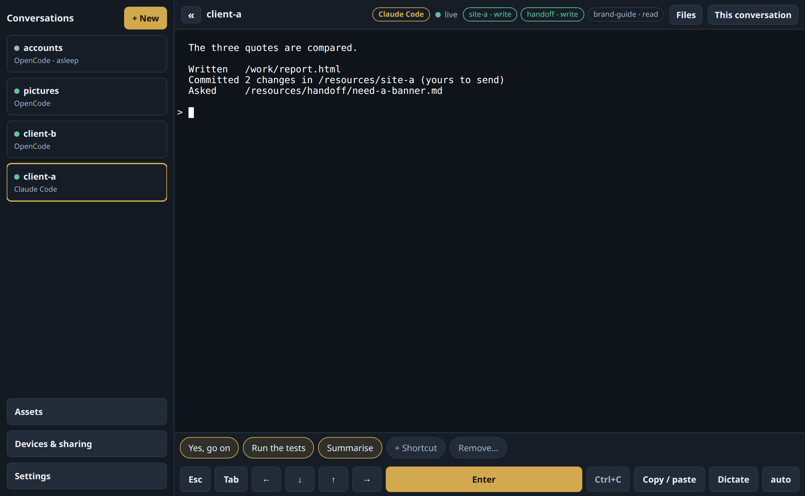
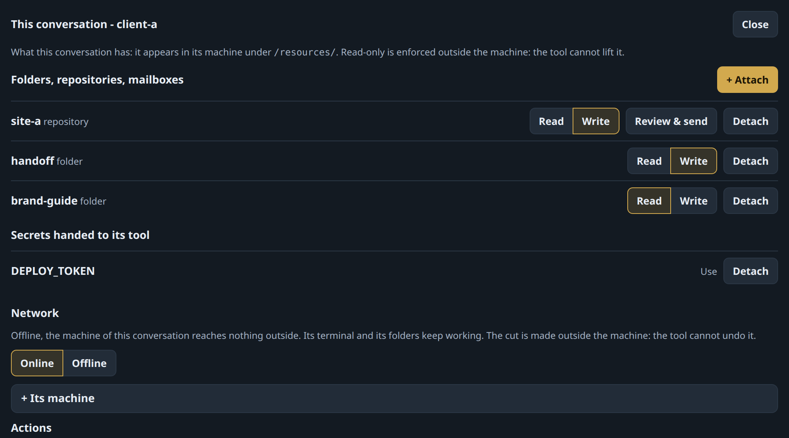
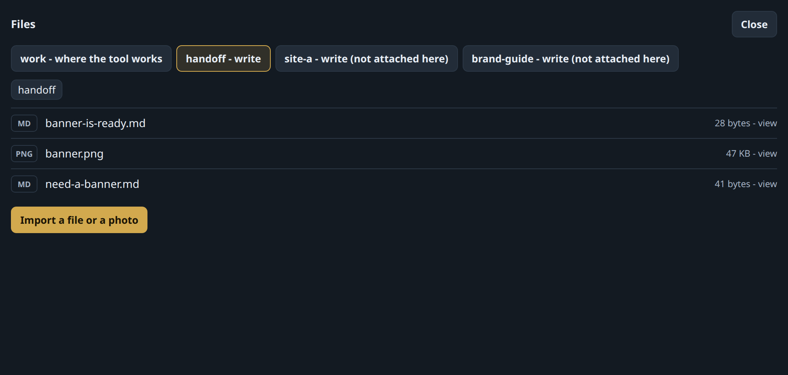
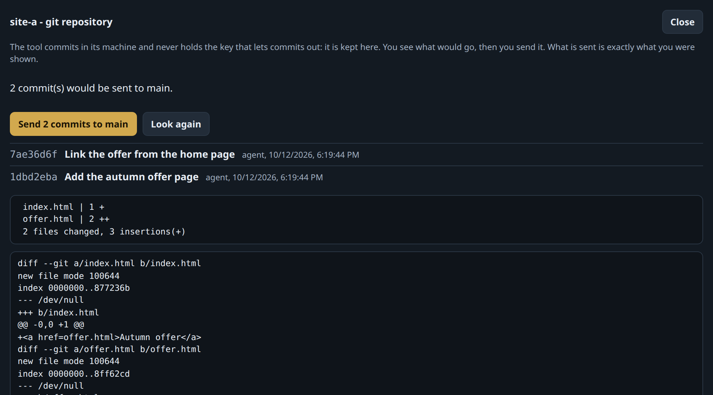
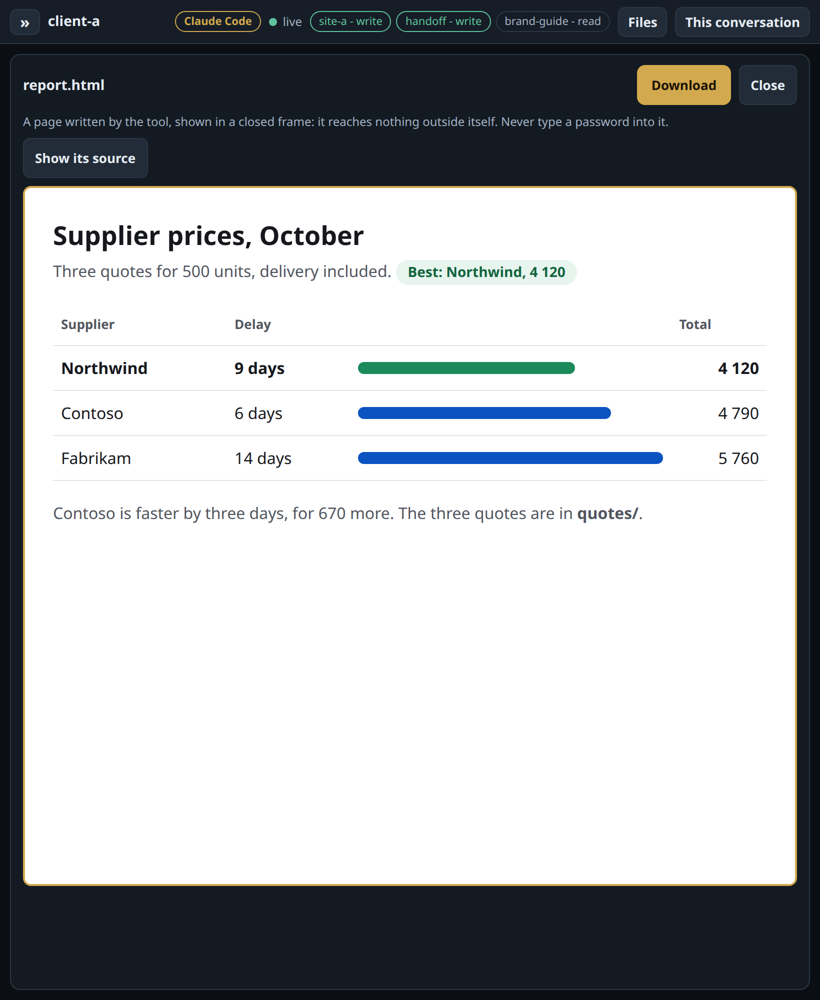

How you use it
One page, on any screen. Each conversation is one agent in its own machine.

01
It sees only what you attach
A folder, a repository, a mailbox: to read, or to write. A key: to use, never to read. One client's work never meets another's.

client-a writes to site-a, reads brand-guide, and can use DEPLOY_TOKEN without ever reading it.
02
They work together
Give two agents the same folder. One asks there, the other answers, whatever tool each one is.

client-a asked for a banner. pictures, another tool in another machine, made it.
03
It commits. You send.
The agent never holds the key that lets code out. You are shown what would go, then you send exactly that.

Two commits wait. Nothing leaves until you press the button.
04
Read the report, not the terminal
A report the agent wrote opens as a page, on a tablet. Share it with a code, no account. Take it back anytime.

Why not just…
- tmux over sshA terminal, and your whole computer behind it.A page made for the phone, and a wall around each job.
- a containerThe host's kernel, and the rest to build yourself.A virtual machine each, with rights, keys and the send button already there.
- the tool's own remote controlOne tool, on your computer, with all of it in reach.Any tool, several at once, each in its own virtual machine with only what you attached.
- a cloud agentYour code and your keys on someone else's servers.They stay at home. The optional relay cannot read what passes.
- From phone or tabletThe same page everywhere, with voice dictation.
- Sleep, wake, rebuildA machine costs nothing asleep, and its work folder outlives it.
- Cut its networkPer conversation, from outside the machine.
How you install it
On a machine at home
A fresh Ubuntu Server, one command. It sets up everything, the virtual machines included.
sudo deploy/install.sh \ --domain clav.example.com \ --operator you@example.com
No public address at home?
One more command, on any small server. It relays, and cannot read what passes.
sudo deploy/relay.sh --key "ssh-ed25519 AAAA…"
Set up once. After that, you only open a page.
Other ways in: a ready-made machine, backup, restore →